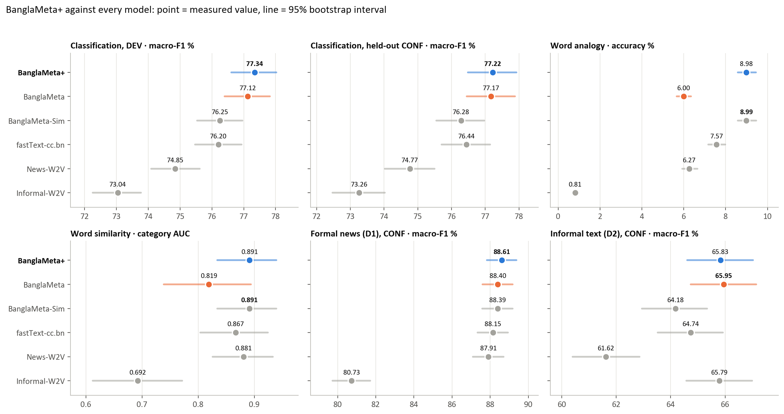
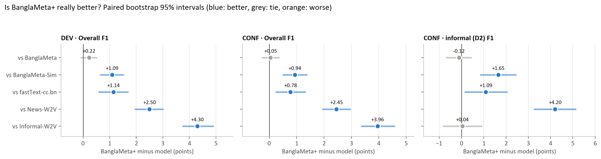
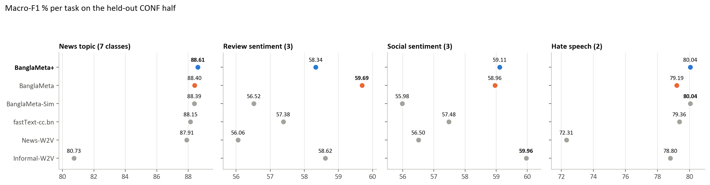
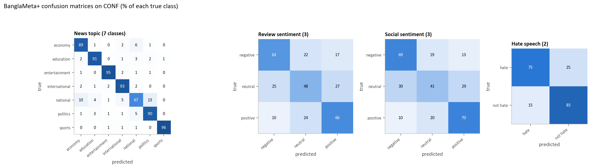
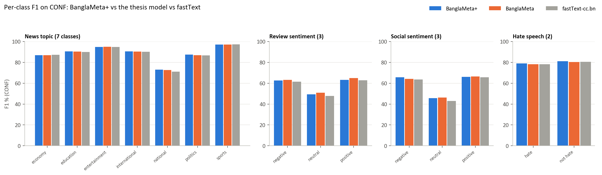
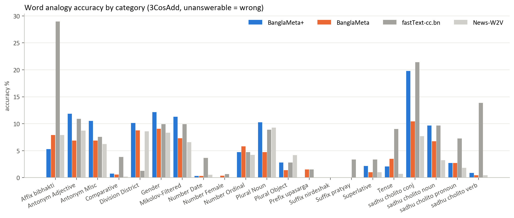
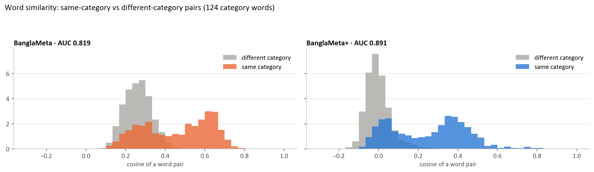
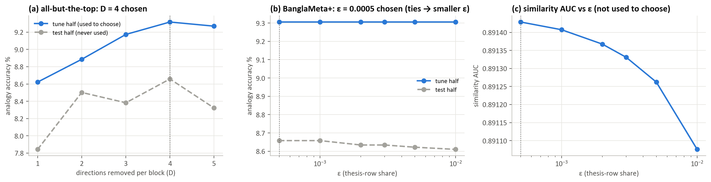
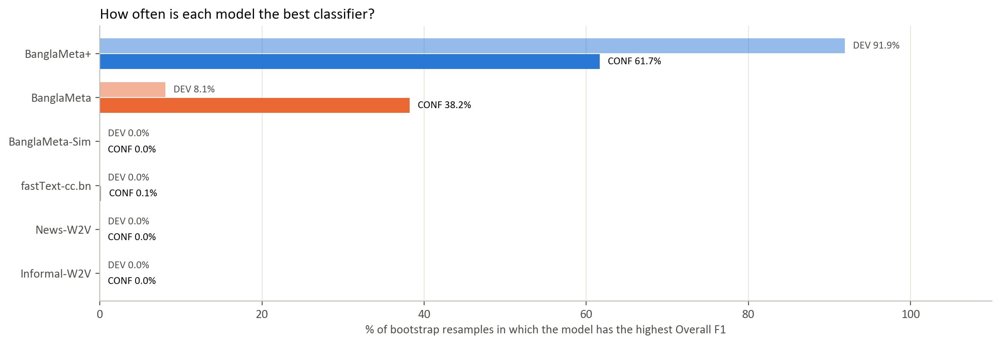

webapp/backend/experiments/evaluate_plus.py and report_plus.py.models/banglameta_plus/banglameta_plus_1200d.bin (word2vec binary, 1.23 GiB, MD5 a30a9c38b5a7964fa5ab2d4b44f2c701)KeyedVectors.load_word2vec_format("banglameta_plus_1200d.bin", binary=True) (gensim)webapp/data/models/merged_plus.f32.npy + merged_plus.words.txtwebapp/backend/prepare.py (recipe) then experiments/export_plus.py (export)eval/dimension_study)| Metric | BanglaMeta+ | BanglaMeta | BanglaMeta-Sim | fastText-cc.bn | News-W2V | Informal-W2V | BanglaMeta+ rank |
|---|---|---|---|---|---|---|---|
| DEV Overall macro-F1 % | 77.34 | 77.12 | 76.25 | 76.20 | 74.85 | 73.04 | #1 |
| CONF Overall macro-F1 % | 77.22 | 77.17 | 76.28 | 76.44 | 74.77 | 73.26 | #1 |
| CONF 95% interval | [76.49, 77.92] | [76.45, 77.88] | [75.55, 76.97] | [75.71, 77.14] | [74.03, 75.49] | [72.47, 74.02] | |
| DEV news D1 % | 88.35 | 88.23 | 87.79 | 87.93 | 87.42 | 81.54 | #1 |
| DEV informal D2 % | 66.34 | 66.01 | 64.71 | 64.47 | 62.27 | 64.54 | #1 |
| CONF news D1 % | 88.61 | 88.40 | 88.39 | 88.15 | 87.91 | 80.73 | #1 |
| CONF informal D2 % | 65.83 | 65.95 | 64.18 | 64.74 | 61.62 | 65.79 | #2 |
| CONF News topic (7 classes) % | 88.61 | 88.40 | 88.39 | 88.15 | 87.91 | 80.73 | #1 |
| CONF Review sentiment (3) % | 58.34 | 59.69 | 56.52 | 57.38 | 56.06 | 58.62 | #3 |
| CONF Social sentiment (3) % | 59.11 | 58.96 | 55.98 | 57.48 | 56.50 | 59.96 | #2 |
| CONF Hate speech (2) % | 80.04 | 79.19 | 80.04 | 79.36 | 72.31 | 78.80 | #2 |
| Analogy, native % | 8.98 | 6.00 | 8.99 | 7.57 | 6.27 | 0.81 | #2 |
| Analogy, semantic % | 7.80 | 6.53 | 7.80 | 4.09 | 6.18 | 0.42 | #1 |
| Analogy, syntactic % | 9.49 | 5.77 | 9.50 | 9.07 | 6.30 | 0.98 | #2 |
| Analogy, Mikolov set % | 11.27 | 7.32 | 11.27 | 9.91 | 6.55 | 0.44 | #1 |
| Similarity AUC | 0.891 | 0.819 | 0.891 | 0.867 | 0.881 | 0.692 | #2 |
| Token coverage, news % | 98.66 | 98.66 | 98.66 | 98.61 | 98.50 | 83.85 | #1 |
| Token coverage, informal % | 94.90 | 94.90 | 94.90 | 96.08 | 91.24 | 91.38 | #2 |
| P(best), CONF % | 61.7 | 38.2 | 0.0 | 0.1 | 0.0 | 0.0 | #1 |
| Dimensions | 1,200 | 900 | 900 | 300 | 300 | 300 |
Bold blue = best of the six. Ranks are among these six models. CONF values for BanglaMeta+ and BanglaMeta-Sim are exploratory.








